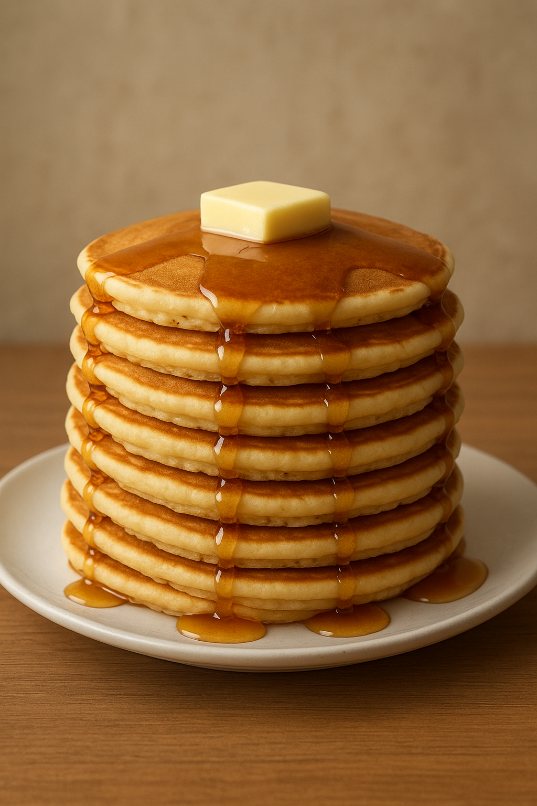

Good Old-Fashioned Pancakes

Description
One of the easiest, cheapest things to make and delicious; this recipe will ensure you whip up perfect golden flapjacks.
Below are the ingredients, most of which you should already have.
Ingredients
- Flour
- Baking powder
- Sugar
- Salt
- Milk
- Butter
- Egg
Steps
- First add all the dry ingredients, sifting them together
- Create a well and add in wet ingredients, stirring them together
- Scoop batter onto your hot griddle
- After cooking for 2-3 minutes, flip
- When golden brown on both sides, you're all done
Home